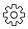

ユーザーアカウントに割り当てられた管理ロールを更新する GitHubで編集 ドキュメントの変更をリクエストする
寄稿者
ユーザーの管理ロールが更新されると、そのユーザーはSaaS Backup for Office 365から自動的にログアウトされます。ユーザーが再びログインすると、管理ロールの更新がユーザーのアカウントに反映されます。
手順
設定アイコンをクリックします画面の左上のユーザーIDの横。
[ アカウント設定]をクリックします。
[ ロール管理]をクリックします。
更新するユーザー名の横にある「ユーザーの更新」をクリックします 。
ドロップダウンメニューをクリックして、役割を選択します。
1つ以上のロールをユーザーに割り当てることができます。確認をクリックします。